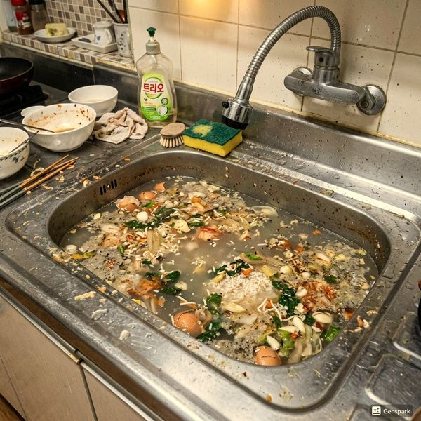
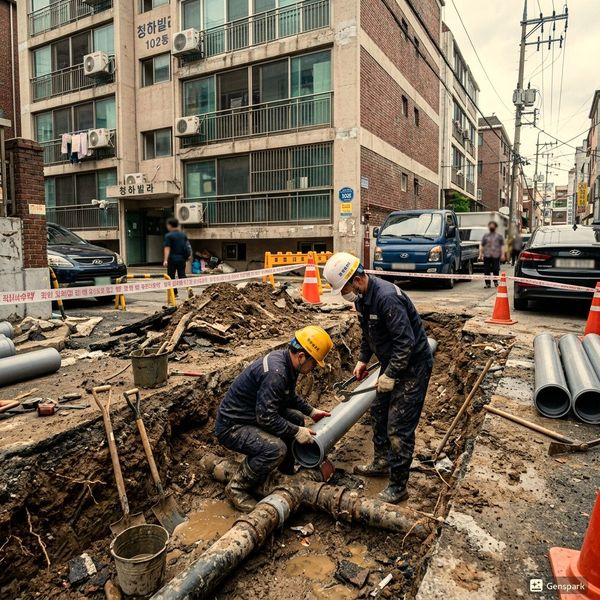
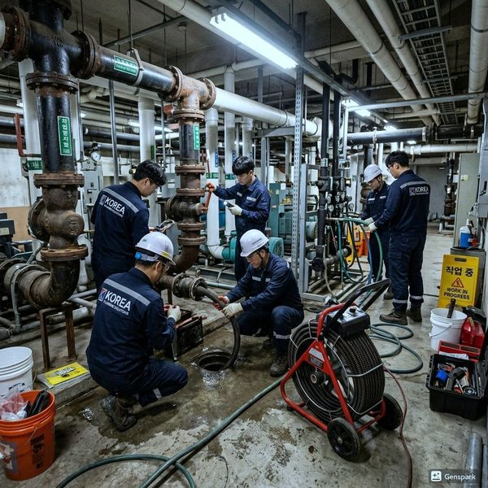

음식물처리기 배수 연결의 핵심 포인트
음식물처리기(디스포저)를 설치할 때 가장 중요한 것은 배수관과의 올바른 연결입니다. 처리기에서 분쇄된 음식물 찌꺼기는 물과 함께 배수관으로 흘러가는데, 배관 경사가 부족하거나 배관 내경이 작으면 찌꺼기가 쌓여 막힘이 발생합니다. 최소 40mm 이상의 배관을 사용하고, 1m당 2~3cm의 경사를 유지해야 합니다. 또한 S트랩이나 P트랩 직전에 처리기 배수가 합류하도록 설계해야 악취 역류를 방지할 수 있습니다. 기존 배관 상태가 좋지 않다면 처리기 설치 전에 반드시 배관 점검을 받으세요.

음식물처리기 사용 후 배관 관리법
음식물처리기 사용 후에는 반드시 15~20초간 충분히 물을 흘려보내야 합니다. 찬물을 사용하는 것이 좋은데, 기름기가 있는 음식물은 찬물에 의해 응고되어 분쇄기에서 잘게 부서지고, 배관에서는 물과 함께 잘 흘러내려갑니다. 뜨거운 물은 오히려 기름을 녹여 배관 깊숙이 들어가게 한 뒤 굳게 만듭니다. 월 1회 이상 얼음 조각과 굵은 소금을 넣고 작동시키면 분쇄기 내부 청소 효과가 있습니다. 배수 속도가 느려지면 제우스시설관리에 연락하시면 고압세척으로 배관을 깨끗하게 복원해 드립니다.

자주 묻는 질문
Q. 음식물처리기에 넣으면 안 되는 것은?
A. 뼈, 조개껍데기, 옥수수대, 섬유질이 많은 채소(셀러리, 파), 기름 대량 투입은 피해야 합니다.
Q. 음식물처리기 때문에 배관이 막히면 어떻게 하나요?
A. 처리기 전원을 끄고 제우스시설관리(010-4406-1788)에 연락하세요. 고압세척과 드레인 기계로 신속하게 해결합니다.